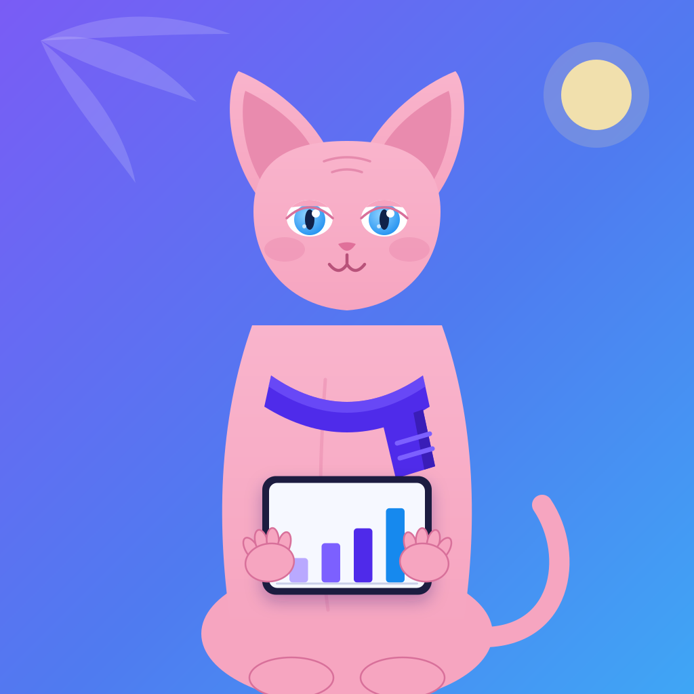
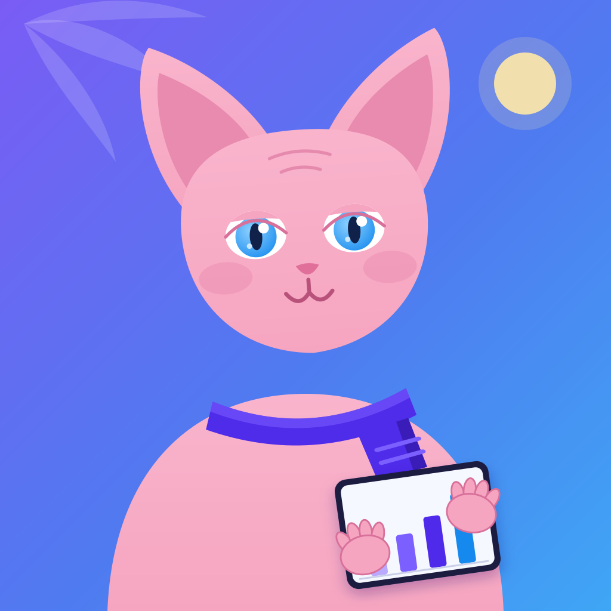
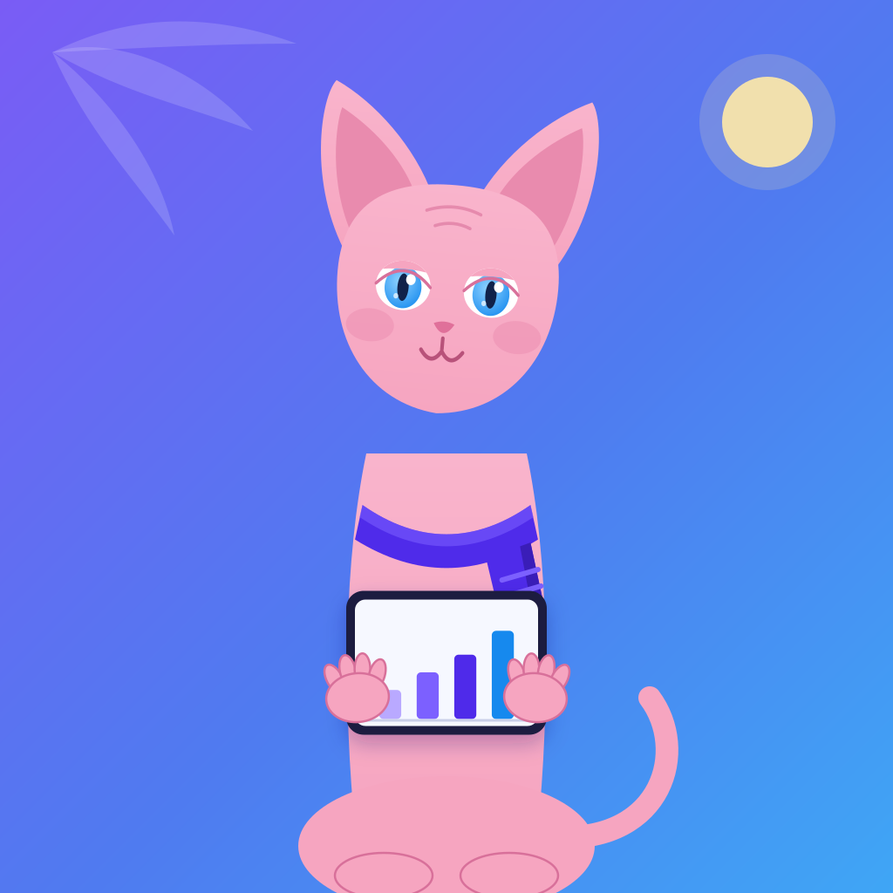

<!doctype html><html lang="ru"><meta charset="utf-8"><meta name="viewport" content="width=device-width,initial-scale=1"><title>Кот-проводник — варианты</title>
<style>body{margin:0;background:#f4f2fb;font-family:system-ui,sans-serif;color:#1d1b3f}main{max-width:1180px;margin:0 auto;padding:32px 16px}h1{font-size:26px}
.g{display:grid;grid-template-columns:repeat(auto-fit,minmax(300px,1fr));gap:20px}figure{margin:0;background:#fff;border-radius:18px;padding:12px;box-shadow:0 6px 24px #4f2bea22}img{width:100%;display:block;border-radius:12px}figcaption{padding:10px 4px;font-weight:600}</style>
<main><h1>Кот-проводник: 3 варианта основного персонажа</h1><div class="g">
<figure><figcaption>Вариант A — сидит в полный рост, планшет в двух лапах</figcaption></figure>
<figure><figcaption>Вариант B — крупный план, голова с наклоном, планшет сбоку</figcaption></figure>
<figure><figcaption>Вариант C — стройный, вытянутый силуэт, планшет у корпуса</figcaption></figure>
</div></main></html>